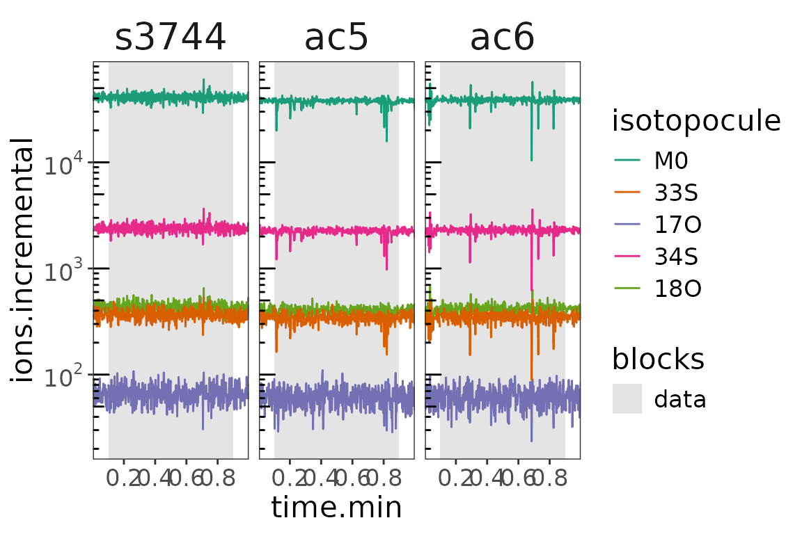
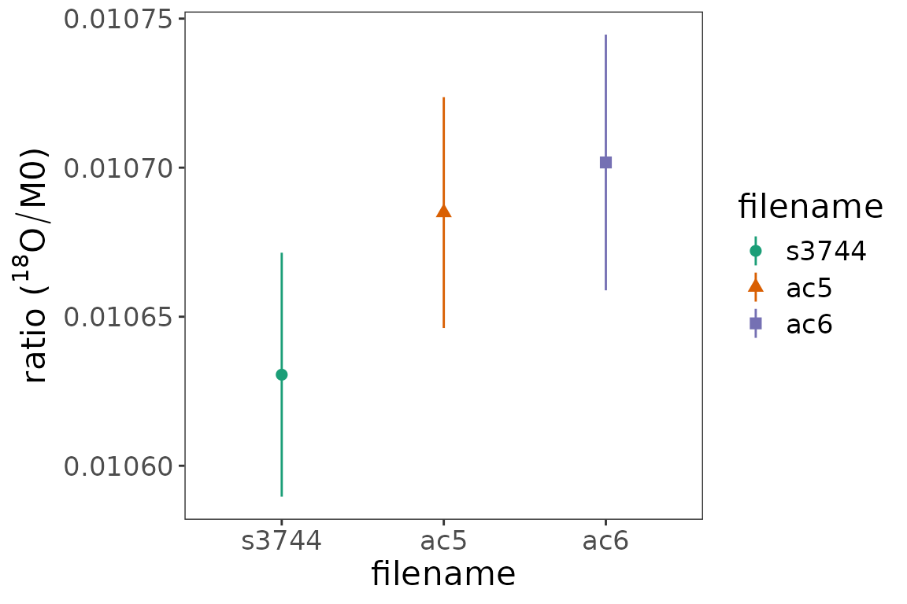

# load libraries
library(isoorbi) # for Orbitrap functions
library(dplyr) # for data wrangling
library(ggplot2) # for data visualizationData
Load data
# load and process data
data <-
# load file included in isoorbi package
system.file(package = "isoorbi", "extdata", "testfile_flow.isox") |>
orbi_read_isox() |>
orbi_simplify_isox() |>
# define data block where signal is stable (plateau)
orbi_define_block_for_flow_injection(start_time.min = 0.1, end_time.min = 0.9) |>
# flag extreme TICxIT values
orbi_flag_outliers(agc_fold_cutoff = 2)Calculations
Ratios
# basepeak & ratios
data_w_basepeak <-
data |>
orbi_define_basepeak("M0")
# ratio summaries
data_summary <-
data_w_basepeak |>
orbi_summarize_results(ratio_method = "sum")Figures
Visualize data
orbi_plot_raw_data(data, y = ions.incremental, y_scale = "log")

Ions of isotopocules in time
Ratios for 18O
fig <-
data_summary |>
filter(isotopocule == "18O") |>
# plot
ggplot() +
aes(
x = filename,
y = ratio, ymin = ratio - ratio_sem, ymax = ratio + ratio_sem,
color = filename, shape = filename
) +
geom_pointrange() +
scale_color_brewer(palette = "Dark2") +
# theme definitions
theme_bw() +
theme(
text = element_text(size = 16),
panel.grid = element_blank()
) +
# labels
labs(
y = expression("ratio ("^18*O/M0*")")
)
fig

Isotopocule ratios 18O vs M0